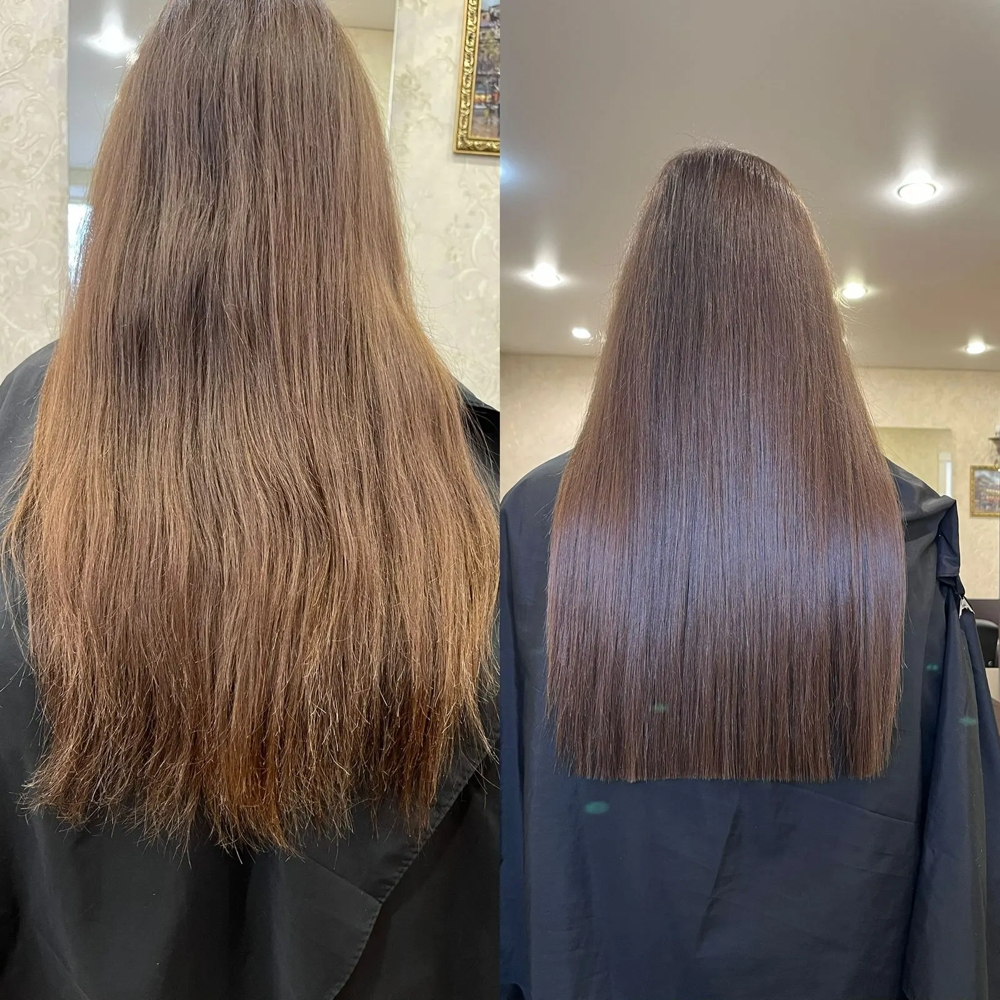
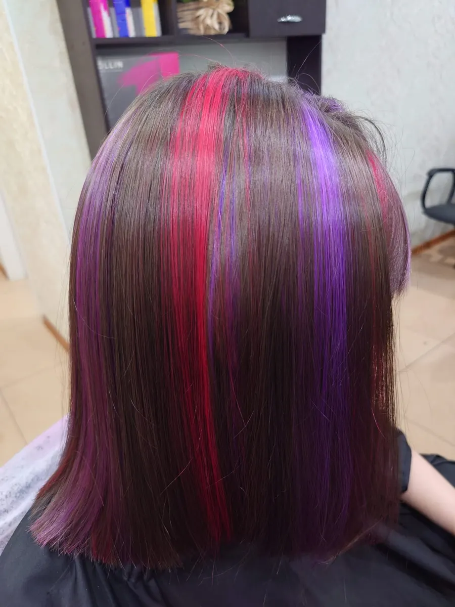
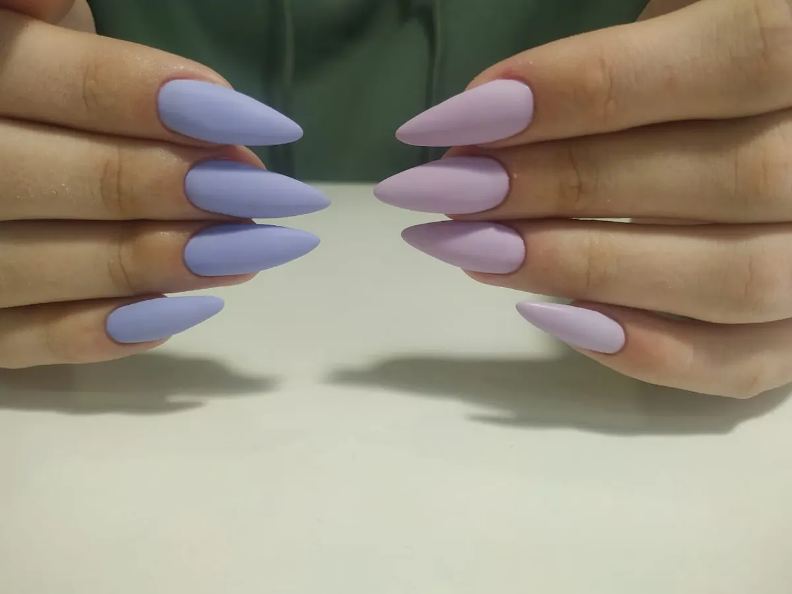
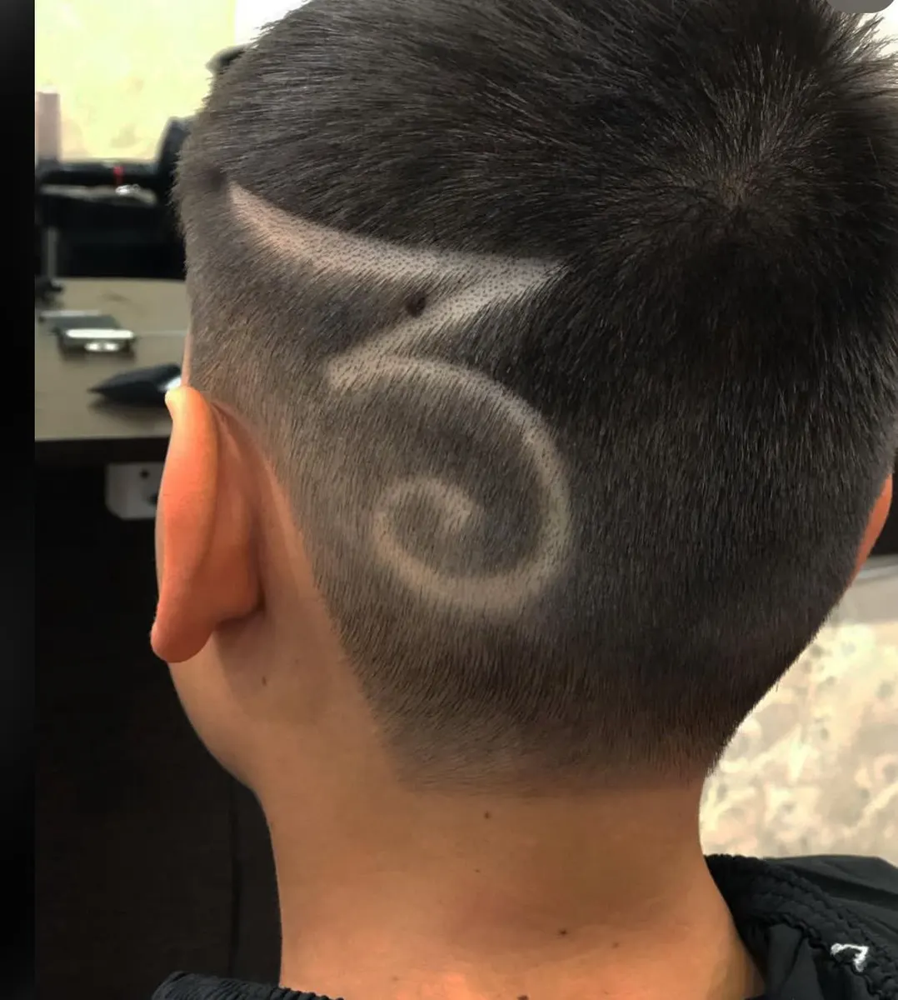

Парикмахерская и педикюр · Ставрополь
Стрижки и педикюр в Ставрополе
Выбираете услугу, день и время – запись уходит в Telegram. Стрижка – от 499 ₽.
- 5,0 на Яндекс Картах, 123 отзыва
- Открыто до 20:00
- Стрижка – от 499 ₽, ламинирование – 1300 ₽

Прайс Цирюльникъ
Цены с карточки на Яндекс Картах.
Стрижки
- Стрижкацена по карточке – от 499 ₽от 499 ₽
Брови, ресницы, волосы
- Ламинирование бровей, ресниц, волос1 300 ₽
Педикюр
- Педикюрцену назовут при записиуточнить
Прайс на карточке не обновлялся давно: актуальную цену уточняйте при записи.
Как записаться
- 01
Выбираете услугу, день и время
Ниже, в форме записи: сообщение уходит в Telegram с готовым текстом.
- 02
Или пишете и звоните сами
Контакты – в конце страницы, работаем до 20:00.
- 03
Приходите: улица Ленина, 328/13
Адрес и карта – в конце страницы.



Что вас ждёт
Запись без проблем
Гость пишет в отзыве: записался без проблем, приняли вовремя.
Чай и кофе
Об этом пишут гости в отзывах.
Чисто
Гости отмечают чистоту в помещении.
Награда «Хорошее место 2026»
Награда пользователей Яндекс Карт указана на карточке.
Отзывы с Яндекс.Карт
«Отличное место. Записался без проблем, приняли вовремя. Мастер Давид сделал именно то, что нужно: аккуратная стрижка, четкие переходы. Никакой лишней болтовни, если не настроен на разговор, но при этом атмосфера дружелюбная. Ценник адекватный качеству. Рекомендую»
LAB · 24 сентября
«Администратор Супер. Мастер педикюра Мария сделала быстро педикюр. Вообщем довольна посещением. Чисто в помещении, предложили чай и кофе.»
Евгения | Ставрополь · 20 июня
«Подстригся здесь довольно быстро и качественно, очень понравилось. Настоятельно рекомендую»
Егор Тихомиров · 1 марта
Отзывы с карточки на Яндекс.Картах, без правок.
Частые вопросы
Сколько стоит стрижка?
На карточке указано: стрижка – от 499 ₽. Точную цену называют мастера.
Делаете педикюр?
Да, педикюр есть – об этом пишут гости в отзывах.
Как записаться?
Через форму на сайте (сообщение уйдёт в Telegram), в MAX или по телефону +7 (988) 111-44-68.
Где вы находитесь?
Ставрополь, улица Ленина, 328/13. На карточке указано: открыто до 20:00.
Запишитесь на удобное время
- Адрес
- улица Ленина, 328/13, Ставрополь
- Часы
- открыто до 20:00
- Телефон
- +7 (988) 111-44-68